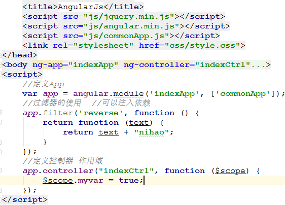
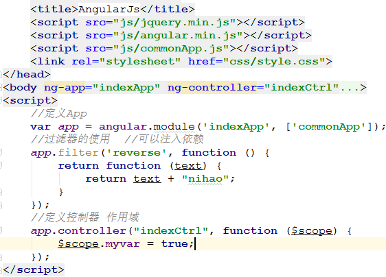

0：定义一个App

1.在html上声明ng-app和ng-controller
2.在js中定义angular,可注入服务和依赖

1.在html上声明ng-app和ng-controller
2.在js中定义angular,可注入服务和依赖
您输入的姓名是：{{name | myfilter}}
问题：如何给文本框初始值（angular）
点击事件ng-click="openmodal()"
键盘事件ng-keyup="submit()" 按键抬起
焦点事件ng-focus="submit()" 获得焦点
扩展应用：查询angular支持的事件手册
时间过滤器：
ng-bind="a.create_time|date:'yyyy-MM-dd HH:mm:dd'"
自定义过滤器：
ng-bind="a.create_time | reverse"
angular自带一些过滤器，同时支持自定义过滤器.
解决了繁琐的html拼接,只需定义:

$scope.myvar = true ; //显示
$scope.myvar = false; //隐藏